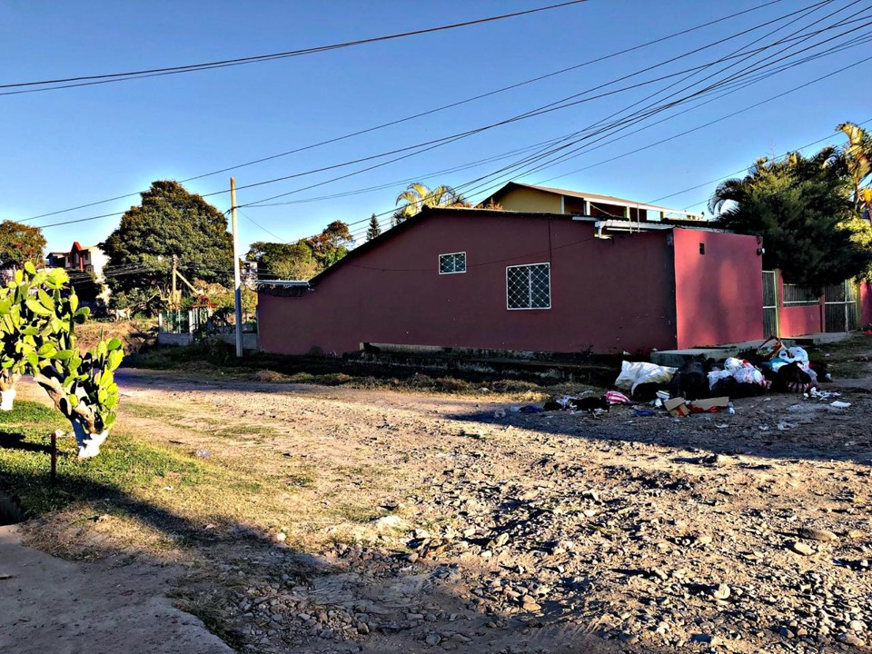

CONTAMINACION POR DESECHOS EN SIGUATEPEQUE
Autor: Martin Leiva
Si hablamos del significado de contaminación todos sabemos que es toda área afectada por el hecho de contaminar con algún factor, en este caso hablare de algunas áreas importantes en donde muchas veces pasamos como desapercibidos y no nos damos cuenta del daño que estamos causando a la salud de muchas personas. Existen muchas áreas de nuestra ciudad en donde vemos que hay desechos acumulados como ríos, calles, barrios, colonias entre otros. Siempre como seres humanos nos convertimos en acumuladores de desechos favoreciendo a que los índices de enfermedades y virus aumenten, siendo así de esta manera en la que nosotros afectamos a la población mediante la incertidumbre de no poner la basura en su lugar.
 Lamentablemente debo mencionar que que en muchos barrios y colonias el camión recolector de los desechos en la cuidad no desempeña aun hasta estos tiempos un buen trabajo en vista de que siempre dejan alguna considerable cantidad de desechos en las calles y esto no solo perjudica la salud de nuestra población sino la presentación de nuestra ciudad. Cabe mencionar que hasta las personas que la municipalidad contrata para la recolección de desechos en nuestra ciudad no portan el equipo necesario para la recolección de la misma, poniendo en riesgo su salud. En muchos sectores de la ciudad que son famosos se ven afectados como ser los ríos ya que no hay una iniciativa de mantenerlos no solo limpios sino mantenerlos con una presentación que sea de agrado para las personas que habitamos en la ciudad y los visitantes.
Podemos hablar de muchas soluciones y solo nosotros como pobladores podemos comenzar a dar el ejemplo, a empezar a utilizar los basureros de la manera correcta, a evitar el acumulamiento de desechos y a hacer consciencia a cada uno de los ciudadanos para que ellos vean la manera en que estamos siendo perjudicados y los diversos sectores que se han visto afectados por dicha contaminación.
Debemos de ser ejemplo en esta sociedad a fomentar la limpieza día a día y no solo mantener nuestras casas de habitación en optimas condiciones sino la ciudad y así ser una de las ciudades que fomenta a proteger áreas verdes y muchas más áreas que deben mantenerse limpias para así tener un mejor entorno para las generaciones que están por venir.